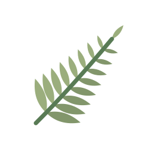
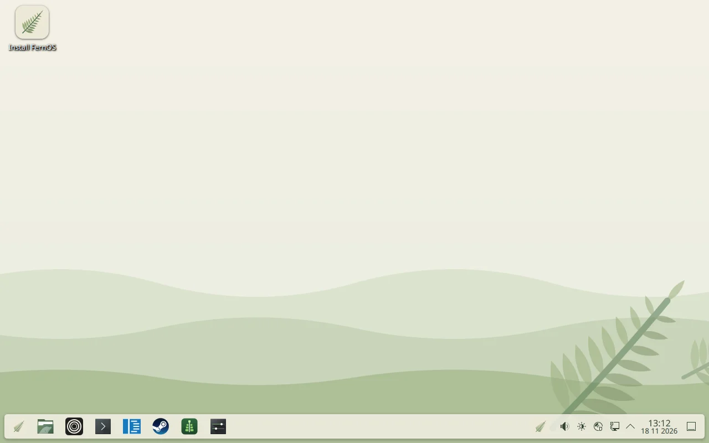

A calm desktop for coding, working and gaming.
Download FernOS Source code
One click: performance CPU, Feral GameMode, effects off and a night theme. Steam, Lutris, Heroic, Discord and MangoHud included.
A calm theme, a quieter CPU and a built-in 25/5 focus timer.
VS Code (Code-OSS), Claude Code, git, Python, Rust, Node.js and C/C++ compilers. Fish shell with a FernOS welcome screen.
Zen is the default browser, with Fern and Fernblox preinstalled too.
KDE Plasma on Arch Linux with the fast CachyOS kernel and repositories. Runs on any 64-bit PC.
Includes the NVIDIA driver for GTX 900/10-series up to RTX 40-series. It's removed automatically on PCs without NVIDIA.
GitHub limits each file to 2 GB, so the ISO comes in two parts. Download both, then join them.
Join on Linux or macOS (in the folder you downloaded to):
cat fernos-x86_64.iso.part1 fernos-x86_64.iso.part2 > fernos-x86_64.iso
sha256sum -c fernos-x86_64.iso.sha256Join on Windows (Command Prompt, in your Downloads folder):
copy /b fernos-x86_64.iso.part1 + fernos-x86_64.iso.part2 fernos-x86_64.isofernos-x86_64.iso to a USB stick of 8 GB or more with
balenaEtcher, Rufus (Windows) or KDE ISO Image Writer.
This erases the USB stick.FernOS is a hobby project in development (0.2). It is tested in virtual machines on UEFI and BIOS. Use it at your own risk.
Live session: user fern, no password.